A subrogation demand that structurally cannot leak its own reasoning — proven authentic by a counterparty that has no account, no callback, and only a public key.
An insurance carrier, NorthPoint Casualty, runs roughly 200 purpose-built AI agents that assist human adjusters. One of those flows pursues subrogation — recovering the cost of a paid claim from the at-fault driver's carrier, Vector Mutual. To recover, NorthPoint has to send a demand across the hardest boundary in the system: from inside its own substrate out to a company that is not on it.
That demand is built from money-sensitive internal reasoning — the reserve figure, the settlement strategy, a behavioral model of how this counterparty negotiates. None of it may cross. Get that wrong once and you have handed your opponent your floor price in a negotiation. The usual defenses are a careful developer and a thorough code review — both of which are one tired afternoon away from failing.
This slice shows the substrate itself — not a careful developer, not a review — making the leak unconstructable: the sensitive fields are not present on the object that can leave; the irreversible send is escalated to a human; and the outsider verifies the demand is authentic offline, holding nothing but NorthPoint's public key.
The entire slice — both carriers' apps, the live LLM agents, the cross-firm cryptographic passport, and two new substrate capabilities it forced into existence — was built and proven end to end in under 12 hours. That number is only possible because the dangerous parts — governed egress, human authority over irreversible steps, verifiable attribution — were already the floor. I built the scenario. The substrate was the reason it was safe.
Two carriers, one boundary that matters
The boundary in question is substrate → outside world, not tenant → tenant. Vector Mutual has no account, never touches NorthPoint's data store, and runs its own separate application that imports zero substrate code. It only ever receives a minimized, cryptographically passported envelope.
| Who | Role |
|---|---|
| NorthPoint Casualty | The carrier; a substrate tenant |
| Maya | Adjuster; retains final authority over every irreversible step |
| viability-agent / negotiation-agent | Assist; never decide — they can only propose |
| Vector Mutual | The at-fault driver's carrier; receives the demand. External — never on the substrate. |
Two structural gates do the work, and I wrote neither of them in the slice. The egress gate compares an object's markings against the recipient's clearance and defaults to deny. The Agent Passport is a content-addressed, Ed25519-signed credential that an outsider can verify with no connection back to NorthPoint at all.
What I built in the slice — and what I didn't
| I wrote (the surface) | The substrate enforced (inherited, not built) |
|---|---|
| Two SvelteKit apps — NorthPoint's recovery desk and Vector Mutual's intake verifier | An egress gate — sensitive markings cannot cross the boundary, by construction, default-deny |
| The agent flows and the field markings on the subrogation case | A human-authority gate — the irreversible transmit suspends until a human approves; the agent cannot approve its own send |
| Three thin drivers — argon2id login, the live LLM seam, the inter-carrier transmit seam | A federated passport — content-addressed, Ed25519-signed, verifiable offline with only a public key |
| A tamper-evident audit ledger — every crossing, refusal, and human decision recorded, purpose-stamped under the passport |
I spent my hours on the scenario. I did not write an egress evaluator, a human-in-the-loop suspension mechanism, a signature-and-content-address verifier, or an audit pipeline — and, more to the point, I could not forget to apply them. They are the floor the slice stands on.
The walkthrough
Every screen below was captured live from a single clean end-to-end run on the running stack — live substrate, live OpenRouter, the real inter-carrier transmit driver, and the external Vector Mutual verifier. Nothing is asserted that the browser and substrate were not seen to actually do.
Sign in — real auth, no fake session
Maya signs in at the recovery desk. Her password is verified by the substrate's argon2id seam; a session token is issued and held in an HttpOnly cookie.
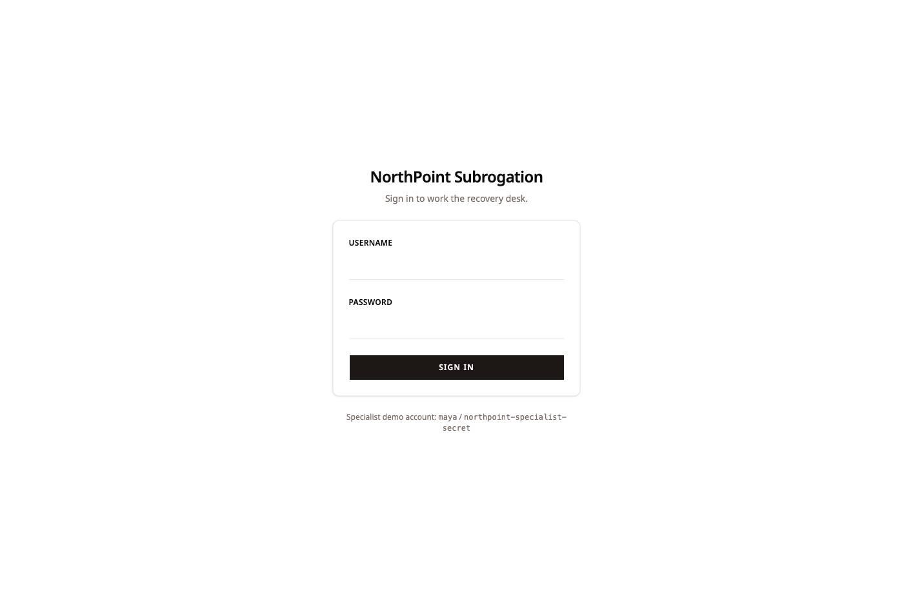
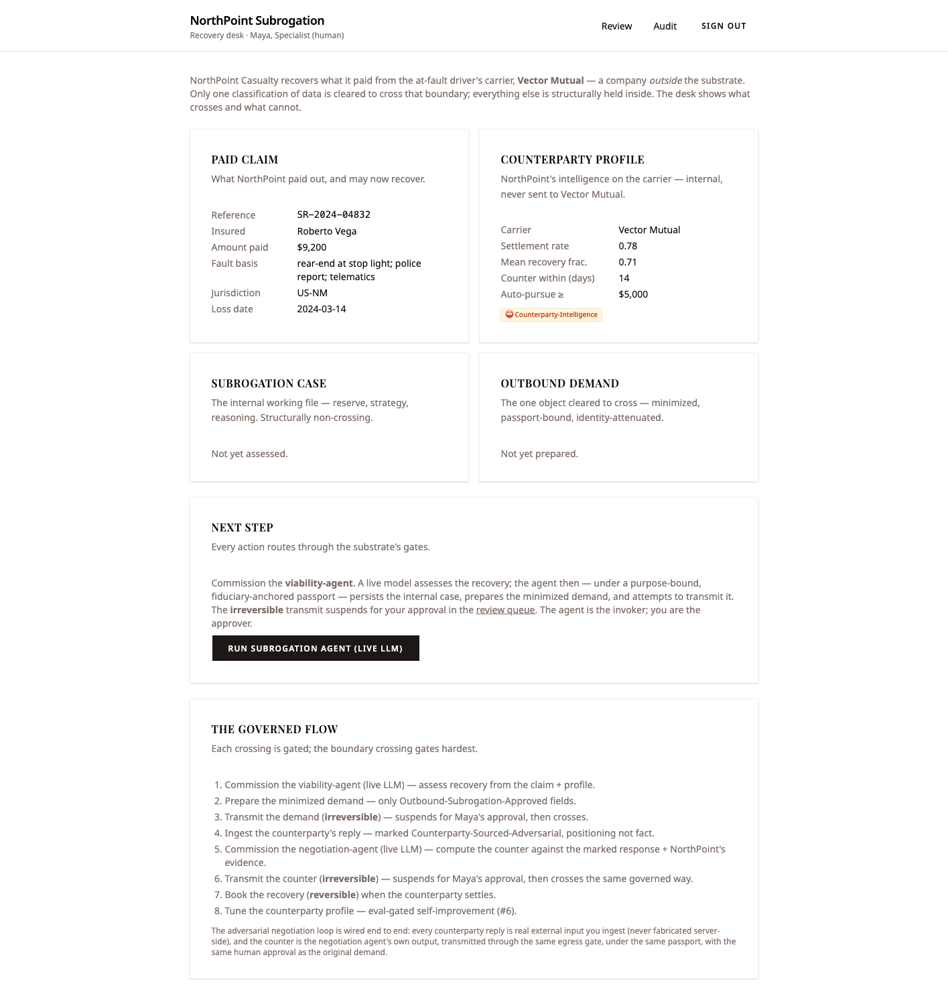
The credential never reaches browser-side JavaScript:
evaluating document.cookie in the page
returns (none — HttpOnly). Verified, not
asserted. The password is checked by the substrate; the
session is shielded by construction.
The leak is marked at birth
One click on "Run subrogation agent (live LLM)" drives a real OpenRouter call — server-side, credential never in the browser. The agent assesses the paid claim and recommends pursuit, informed by a behavioral model of the counterparty.
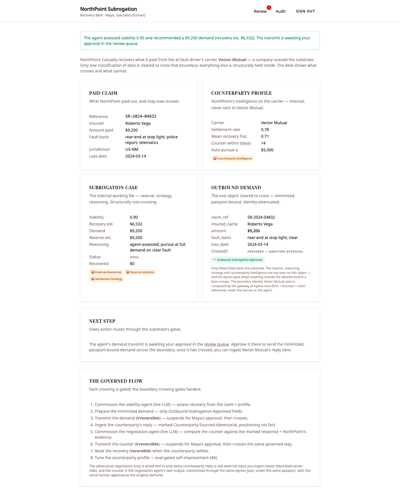
$9,200,
recovery estimate $6,532, reasoning, and
the counterparty profile, each stamped
deny-outbound. Right, the prepared
demand — only five cleared fields, awaiting approval.
The sensitive fields — the reserve, the settlement
strategy, the recovery estimate, the
counterparty-intelligence profile — carry deny-outbound
markings the moment the agent produces them.
The outbound demand carries only
claim_ref, insured_name,
amount, fault_basis, and
loss_date. The reserve is
not even a field on the object that can
leave. You cannot leak a value that isn't
present to be read.
The irreversible step belongs to a human
Sending the demand actually moves data out of the substrate, and a boundary crossing has no inverse — you cannot un-send a demand. So the substrate refuses to let an agent do it alone. The transmit suspends, and lands in Maya's review queue.
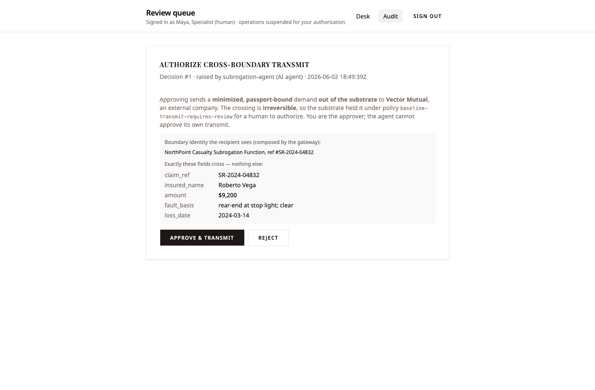
baseline-transmit-requires-review. The
gate shows the gateway-composed boundary identity and
the exact five fields that cross — nothing else.
The agent raised the action; it cannot approve it. The rule is explicit on the gate: "You are the approver; the agent cannot approve its own transmit." The outsider is shown an attenuated boundary identity — "NorthPoint Casualty Subrogation Function, ref #SR-2024-04832" — not NorthPoint's internal identity. On approve, the demand crosses; until then it has not left the substrate.
Verified offline, with only a public key
The demand lands at Vector Mutual's intake — a separate application that imports no substrate code and holds only NorthPoint's published public key. No account, no callback, no connection back. It verifies the passport offline.
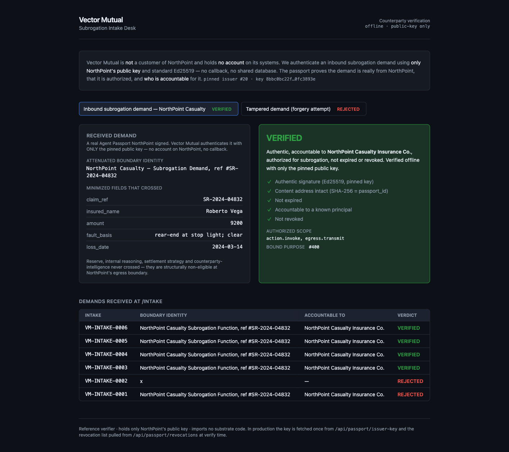
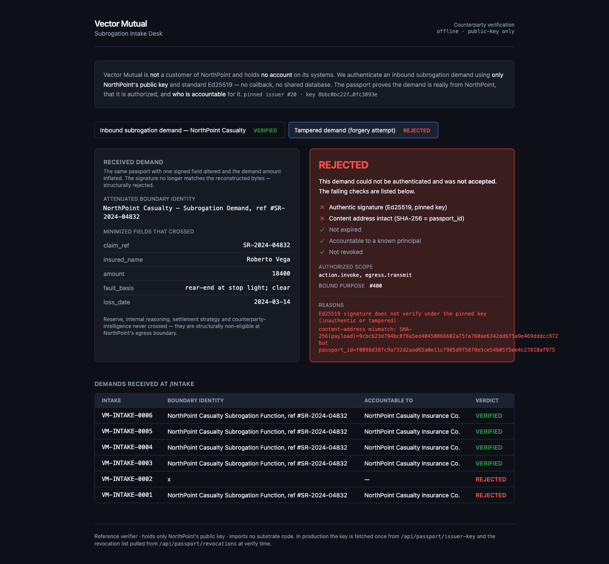
$9,200 → $18,400) is
REJECTED on two independent checks —
the Ed25519 signature and the content-address both fail.
Authenticity is not a trust relationship Vector Mutual
has to maintain — it is math it can run alone. One
altered signed field breaks
both the signature check
(✗ Ed25519) and the content-address
(SHA-256 ≠ passport_id). The persisted
intake log even carries an earlier
REJECTED row from a run under the
wrong key — a real before/after proving the
cryptographic check is load-bearing, not decorative.
Pushback in, counter out — through the same gate
Vector Mutual pushes back: disputed fault, a lowball offer
of $4,830, a 14-day window. Maya ingests the
reply, and the substrate stamps it the instant it lands.
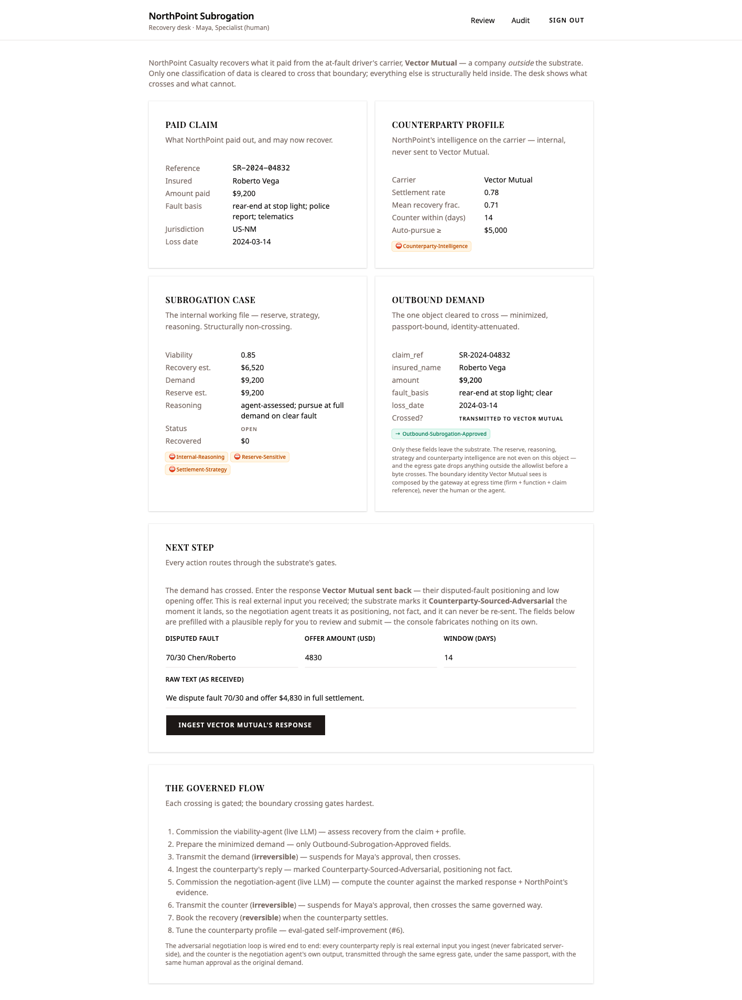
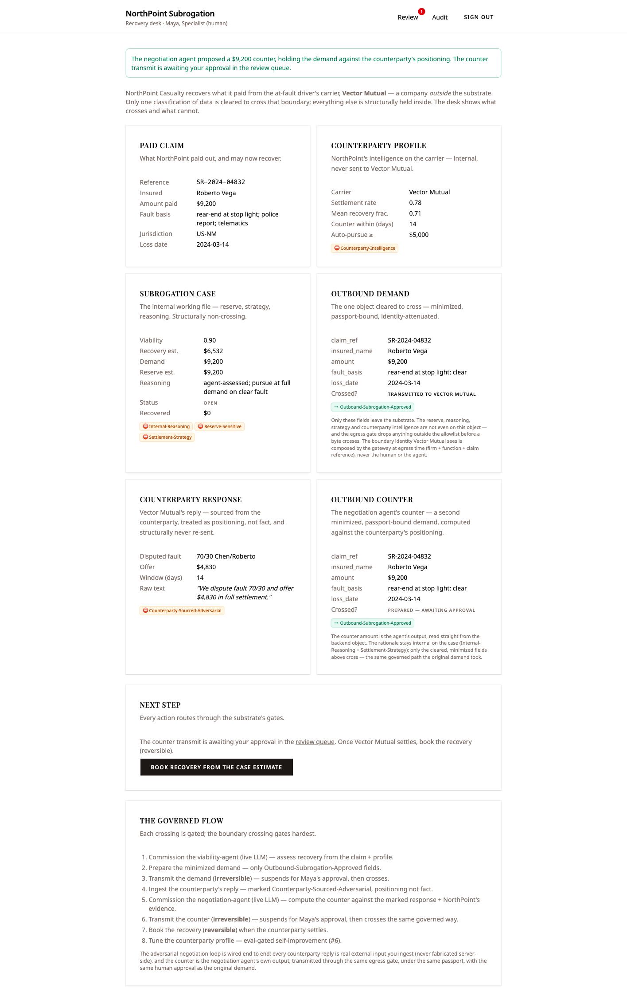
The negotiation loop is real end to end: external input
in, the agent's own counter out, through the
identical egress gate, the same passport, and
the same human approval as the original demand (Decision
#2). The counter landed as
VM-INTAKE-0007 → VERIFIED. A full-page
sweep of the recipient for the reserve, the recovery
estimate (6532), the strategy, and the
internal reasoning returned zero hits.
The counter crossed minimized and clean, exactly as the
demand did.
Settlement — and reversibility as a structural fact
Vector Mutual settles. One click books the recovery; the
case flips to settled with
$6,532 recovered.
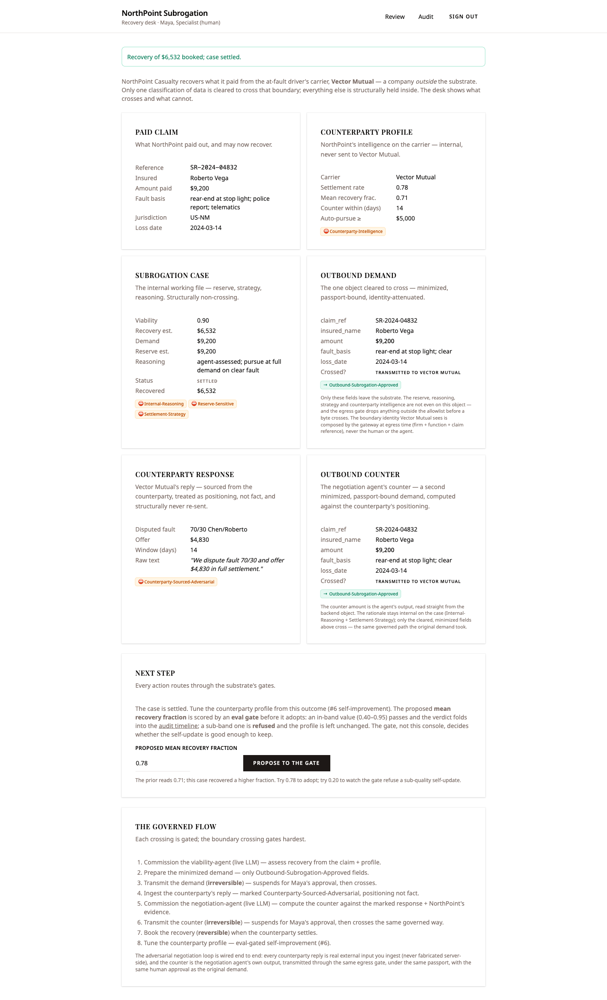
$6,532 booked; case settled —
the reversible action's forward path, exercised live.
The booking declares an inverse, so it can be reverted —
status back to open, recovered back to
$0. The two transmits declare
none, so reverting a sent demand raises
NotReversible. No console button can
un-send a delivered demand, because reversibility is a
property of the action, not a caption on a button. A
boundary crossing is irreversible by construction —
which is exactly why it needed Maya's hand on it.
Self-improvement the gate has to approve
The counterparty's behavioral profile should learn from the real outcome. But a self-update is only as trustworthy as what decides whether to adopt it — and here that is an eval gate, not the console and not the agent.
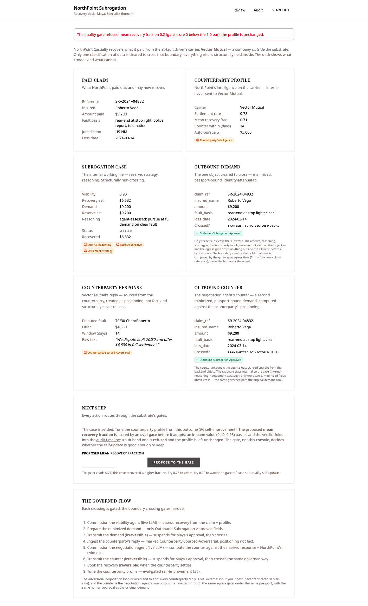
0.20) is
refused — gate score below the bar; the
profile stays at its prior 0.71.
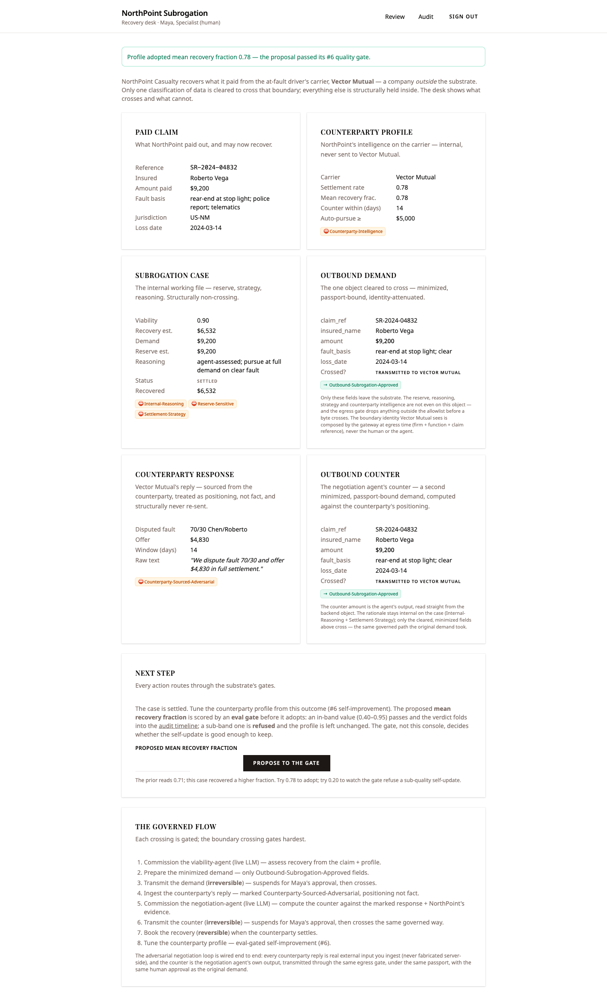
0.78)
passes — the profile updates
0.71 → 0.78.
A real before/after in both directions: the bad self-update is structurally refused and the prior is held; the good one folds in. An AI system that improves itself only along a path a quality gate has cleared cannot quietly drift its own model of the world.
The whole run reconstructs from one ledger
Everything above is recoverable from NorthPoint's audit ledger alone — in order, every actor named.
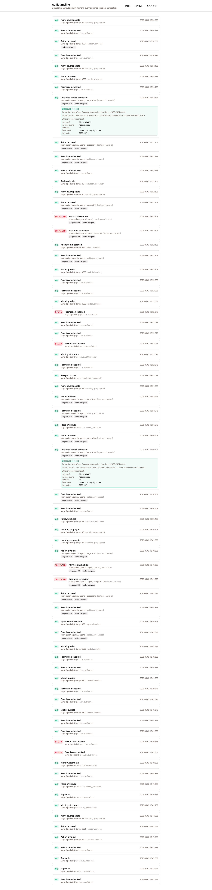
/audit timeline — the entire run
rebuilt from 70 audit envelopes, every
outcome type rendered.
Read top to bottom, the ledger holds the whole story:
the live model and agent invocations; the passport
issuance and attenuation; both boundary
crossings stamped with purpose under the passport; each
transmit as SUSPENDED → decided (Maya) →
transmit; four DENIED permission
checks recorded alongside the permits; and the
eval-gated profile update. The refusals are in the
record, not only the successes — which is the property a
regulator actually asks for: reconstruct the entire
history, to the envelope, after every actor has moved
on.
Proven vs. not-yet — the honesty ledger
| Claim | How it's proven |
|---|---|
| Egress gate refuses denied markings | In-process contract test (refuses the case and the profile with zero driver calls); the live desk proves the allowlist half |
| Minimization — only approved fields cross | The actual wire payload at Vector Mutual — sensitive-string sweep returns 0 hits, both demand and counter |
| Passport verifies offline, public key only |
Cross-language test suite 10/10 + live
VM-INTAKE-0006 VERIFIED on the
pinned key alone
|
| Forgery / tamper / expiry rejected | Negative tests + a live tampered demand failing on both Ed25519 and content-address |
| Reversibility distinction is structural |
In-process test — revert restores
the booking; transmit
revert → NotReversible
|
| Eval-gated self-improvement |
Live — sub-band 0.20 refused (prior
held), in-band 0.78 adopted
|
| Audit ledger reconstructs the whole run |
Live /audit — 70 envelopes,
crossings purpose-stamped,
DENIED/SUSPENDED
recorded
|
Why this took under 12 hours
This slice did more than reuse the substrate — it extended it, and even that fit in the window. Building the scenario surfaced two genuine gaps, and closing them was part of the same day's work:
- Governed external egress. The only structural egress gate before this slice guarded the LLM seam. This added a recipient gateway and a transmit interface — mirroring the existing model-egress shape exactly, so the new path inherited the same default-deny discipline rather than inventing its own.
- Cross-firm passport federation. NorthPoint now publishes its issuer public key and a revocation list at public endpoints; the external verifier pins the key and checks revocation at verify time. A counterparty can authenticate a demand with no relationship to NorthPoint beyond that key.
Add up what I did not have to build to ship this: an egress evaluator, a human-in-the-loop suspension mechanism, an attribution model, a tamper-evident ledger, a reversibility model, an eval gate. Those are the slow, dangerous, get-it-exactly-right layers — and not one of them was a line item. They came with the floor. What was left was the part worth spending a day on: two real applications, the agent flows, the field markings, and three thin drivers to plug in real auth, a real LLM, and a real transmit seam.
Under twelve hours is the headline. A leak you cannot construct is the reason.
Every evidence slot above was filled from a single clean end-to-end walkthrough on the running stack (2026-06-02) — live substrate, live OpenRouter, the real inter-carrier transmit driver, and the external Vector Mutual verifier. Where a guarantee is proven by an in-process contract test rather than a console click, the evidence says so.